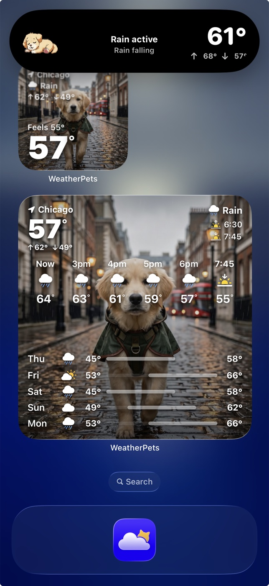

The WeatherPets Widget Guide: Your Pet on Your Home Screen
The best part of WeatherPets is not even opening the app. It is glancing at your home screen and finding your pet already there, telling you what the sky is doing today. Here is how to set up widgets and Live Activities so your forecaster greets you every time you unlock your phone.
What a WeatherPets widget actually shows
A WeatherPets widget puts two things side by side: your pet and your local weather. At a quick look you get the current temperature, the condition for the day, and your pet styled to match it. Sunny morning? Your pet is basking. Rain rolling in? They have got the look for it. It is the same information a plain weather widget gives you, except you actually want to look at it.
That little hit of personality does something useful. A boring weather number is easy to ignore. A pet looking back at you, dressed for a storm, makes the forecast stick. You glance, you register that rain is coming, and you grab the umbrella before you walk out the door.
The widget sizes you can choose
iOS gives you a few shapes to work with, and WeatherPets supports the ones that matter most:
- Small home screen widget: A tidy square with your pet and the current temperature plus condition. Perfect if you like a clean home screen and just want the quick read.
- Medium home screen widget: A wider card with more room for your pet and a little extra weather detail. Great as the centerpiece of your main page.
- Lock screen widget: A compact version that sits above or below your clock, so the weather is the very first thing you see without even unlocking.
You can mix and match. A lot of people keep a small widget on the home screen and a lock screen one too, so your pet shows up whichever way you check your phone.

How to add a WeatherPets widget on iPhone
If you have never added a widget before, do not worry. The whole thing takes under a minute, and the steps are the same for any app.
- Touch and hold an empty spot on your home screen until the apps start to jiggle.
- Tap the plus button in the top corner of the screen. This opens the widget gallery.
- Search for WeatherPets in the search bar at the top, or scroll down until you find it in the list.
- Swipe through the sizes and pick the small or medium layout you want.
- Tap Add Widget, then drag it wherever you like and tap Done.
That is it. Your pet is now living on your home screen, updating through the day as the weather changes. If you want to move it later, just touch and hold it again and drag it to a new spot.
Adding a lock screen widget
Lock screen widgets are a separate little setup, and they are worth doing because you see your lock screen constantly.
- Touch and hold your lock screen until the Customize button appears, then tap Customize and choose Lock Screen.
- Tap one of the widget slots, either the row above the clock or the area below it.
- Find WeatherPets in the list and tap it to drop it into the slot.
- Tap Done to save your new lock screen.
Now the weather is the first thing you see when you pick up your phone, no tapping required. Apple has a full walkthrough of lock screen and home screen widgets in its official guide to adding and customizing widgets if you want the deep version.
Live Activities: weather that tracks in real time
Widgets refresh on their own schedule, but a Live Activity is the real-time version. When you start one, WeatherPets pins your pet and the current conditions right on your lock screen and, on newer iPhones, in the Dynamic Island at the top of the display. It stays there and updates as conditions shift, so you do not have to keep reopening anything.
This is the feature you will love on a changeable day. A heat wave building through the afternoon, a storm front sliding in, temperatures dropping fast in the evening: the Live Activity keeps the latest read in front of you with your pet along for the ride. It turns your forecast into something you can keep an eye on while you go about your day.
To start one, open WeatherPets and look for the option to begin a Live Activity for the current conditions. Once it is running, you will see it on your lock screen until you dismiss it.
A few tips to get the most out of it
- Make sure location is allowed. Widgets need your location to show local weather. If your widget looks stuck, check that WeatherPets has location permission in Settings.
- Pair a widget with a Live Activity on busy weather days, so you get both the at-a-glance read and the live tracking.
- Put the widget where your thumb lands. The whole point is the easy glance, so give it a spot you actually look at.
The best iPhone widgets for pet owners
Widgets turn your home screen into a glanceable dashboard, and a few are worth a spot alongside WeatherPets. Apple Weather's widget covers reliable basics in several sizes. Chewy's widget tracks upcoming deliveries so you never run out of food. AllTrails puts your next walk a glance away. But the WeatherPets widget is the only one that's also a photo of your best friend — your real pet next to the current temperature, updating throughout the day.